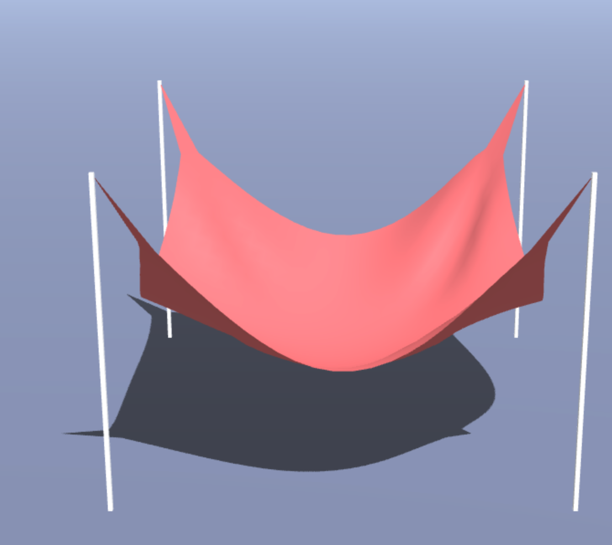
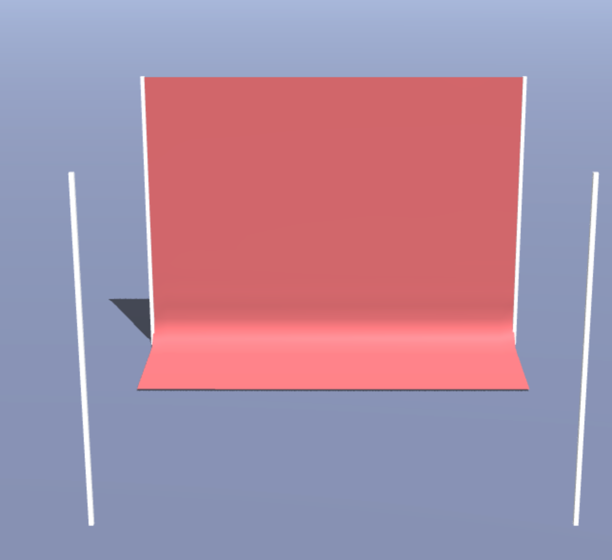
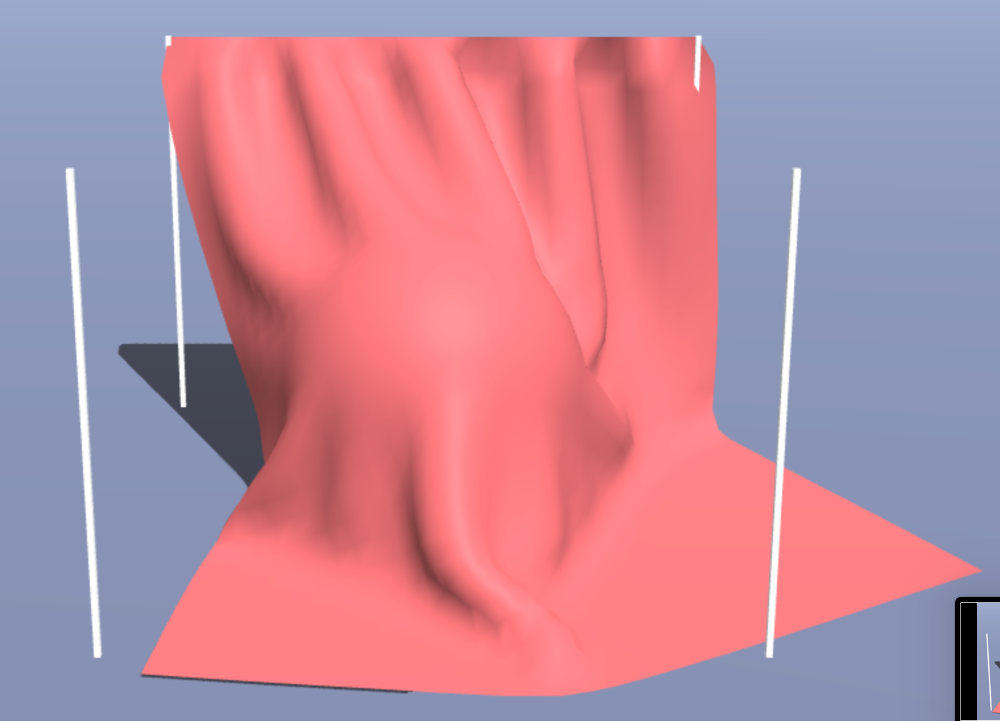
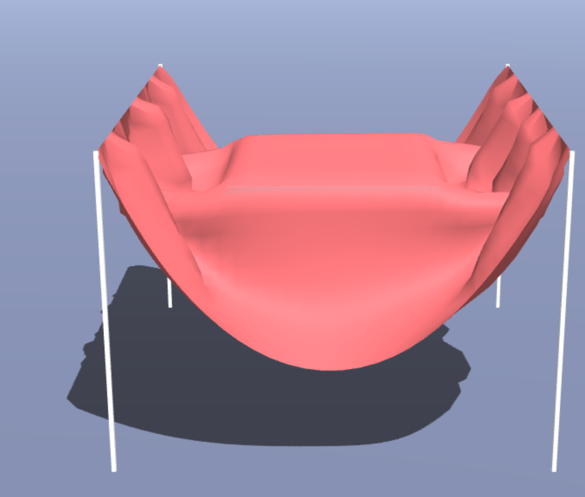

COS426 Assignment 5 Cloth Simulation — Writeup
Switch to: Simulation
that all images in this writeup were generated directly by my solution code or provided by the course staff (exception: art contest submissions may pass through intermediary software like GIMP)
that no other student has viewed my writeup explanations or my writeup images
that my solution code is my own work; particularly that my solution was not copied from any other student's solution code, and that no other student copied their solution directly code from me
that I did not discuss assignment specifics or view the solution code of any other student besides that of my (optional) partner
that I have followed all other course collaboration and course plagiarism policies as written on the course website.
DANICA TRUONG (dtruong)
Collaborated with: PARTNER NAME HERE (partner-netid-here)
Table of Contents
- (0.5) Event listeners
- (1.0) Cloth
- (1.5) Constraints
- (1.0) Gravity
- (1.5) Verlet integration
- (0.5) Floor collision
- (1.5) Sphere collision
- (1.5) Box collision
- (1.0+) Extensions
- (1.0+) Art Contest
Event Listeners
Briefly describe your implementation of adding event listeners to the scene. In particular, list all of the keys that you have bound to an action, and briefly describe the action, as below:
- "ArrowUp": Move the looked-at particle upwards.
- "ArrowDown": Move the looked-at particle downwards.
- "ArrowLeft": Move the looked-at particle leftward.
- "ArrowRight": Move the looked-at particle rightward.
- "MouseDown": Recorded the looked at particle's distance from the camera position.
- "MouseMove + ShiftKey": Move the looked-at particle twoards the mouse position using the ray direction and camera position.
- "MouseUp": Nullified the particle selected.
Cloth
For each of the constraints, I went through each of the particles in the cloth. For Structural constraints, I added constraints between the particle and it's neighboring particle to the right and bottom. For Shearing constraints, I added constraints between the particle and it's neighboring particle to the bottom-left and bottom-right. The distance is this.restDistance * this.restDistanceS since it is a diagonal constraint. For Bending constraints, I added constraints between the particle and it's neighboring 2 particles to the right and 2 particles to the bottom. The distance is this.restDistance * this.restDistanceB since it is a constraint connecting particles 2 particles away.
Constraints
For each constraint, I enforced it by finding the correction vector using the given formula on the assignment page.
Gravity
Firstly, I made sure to add the force acted on the particle to it's overall netforce. Then, I implemented created a force using the equation F=ma -> (-p.mass * GRAVITY) for the y direction of a particle.
Verlet integration
To implmement verlet integration, I followed the equation given in the assignment details.
First, I cloned the current position of the particle. Then, I applied the formula to find the new position.
I had simplified the formula out to be: new position = 2(currentPosition) - DAMPING * currentPosition - previousPosition(1-DAMPING) + Force/Mass * deltaTime * deltaTime.
I then updated the previous position to the cloned last position and reset the net force.
I then went through all the particles in the cloth and upadted its position using the integration function I just implemented.

Floor collision
If the y position of the particle is less than the y position + EPS of the floor, this means that the particle has gone through the floor. Therefore, I set
that particle's y position to be equal to the floor + EPS. EPS is used to avoid clipping.

Sphere collision
If the distance between the particle to the position of the sphere (center of the sphere) is less than the radius + EPS, then the particle is inside the sphere and needs to be projected to the
surface of the sphere. In order to project the particle to the surface of the sphere, I set posNoFriction to be the original position of the particle subtracted by the sphere's center position, multiplied by the ratio of [the orginal position's distance
to the center of the sphere] to the radius of the sphere. This allows me to project the particle to the nearest point on the sphere's surface.
If the position of the particle in the last time step (previous position) was outside the sphere, I accounted for friction. I followed the details from the assignment page for this. Lastly, I called .handleSphereCollision() for every particle in the cloth.

Box collision
To handle box collisions, I compared each of the position's coordinates to the corresponding side of the box (ie:found distance between particle's x coordinate and box's max and min x). I then found the smallest
length between these comparisions and used that to set the particle's position to the corresponding side. If the previous position of this particle was not inside the box, I accounted for friction by following the
details on the assignment page.

Extensions
- Event Handlers Revisited: I added 3 more events based on the user's mouse inputs. If the user clicks down, the particle at the mouse pointer is recorded and I caulcuated the distance between this particle to the camera's position. When the user moves the mouse while holding down and the shift key, I make the cloth follow the mouse by using the raycaster multiplied by the distance previously calculated and adding camera position to get the new position.(see the event listeners section for more details on the exact events happening per mouse action).
- Rain: To apply rain, I went through each "rate" raindrop and found a random coordinate. At the particle that was "hit", I added the impulse (which is just a negative y value with magnitide of the given strength). I added a weaker impusle (by 0.15, which was choosen arbitrarily based on what I thought looked best) to the particles surrounding the hit particle.
- Wind: To apply a more interesting wind, I used sinusoidal functions. The used functions were choosen arbitrarily based on what I thought looked best.
Art contest
Briefly describe your submission to the art contest. Please include images and/or videos as necessary so that we can see what you've done!